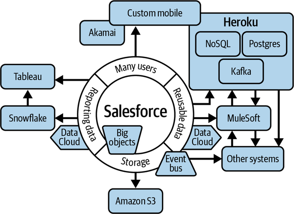

In this chapter we will dive deeper into the enterprise fit of the Salesforce architecture components. Some of the players in this space are open source offerings, some are third-party, and several are now owned by Salesforce. The products and companies discussed here should be taken as examples of the archetypes and not as recommendations. There are many valid options in each of these product industries. The important thing is to be aware of when scale factors might lead you to choose additional products outside of the Salesforce platform. Take another look at Figure 2-3 to review the basic definitions of resource types that are sold, provisioned, and used in a cloud service offering. The management of these resources will strongly influence your architecture. Figure 4-1 shows some of the areas that Salesforce architects expand into. In this chapter we will explore some of the reasons behind such expansions.

Working in Salesforce requires limiting the complexity of your data structures. Complex structures can have severe impacts on performance in any system. Salesforce has implemented many restrictions and limits to prevent unhealthy patterns. For example, if you have ever worked to tune query performance by avoiding full table scans and table locking, the best practices will be familiar to you. You will just be using new tools to manage joins, locking, indexing, and other query optimizations. With these restrictions in place, working in Salesforce means that you don’t always have the luxury of starting out with loose disciplines and later implementing more performant strategies.
Data skew is a concern brought about by the automatic referential integrity enforcement of certain Salesforce data concepts. In very broad terms, if one record has a relationship to several thousand other records, making changes to that record can cause locks. This is a one-sentence definition of a very deep database management concept. The numbers vary, and the actual impact can be small or large depending on the application. The point is that improperly estimating and planning for how your data relationships will scale can lead to a lot of rework. The orders of magnitude are what you want to be aware of, so that you can design around them.
Salesforce Object Query Language (SOQL), the platform’s data access language, has a lot of time-saving shortcuts built into it. It’s actually quite handy once you get used to it. If you have a background in other flavors of SQL, this is a good way to repurpose your existing knowledge. SOQL (or, more accurately, the Salesforce data access APIs) does have a few limitations that require knowledge to navigate, though. For example, you can build queries that reference relationships up to five levels deep, but no further. The built-in reporting functions also have limitations related to data complexity.
It is a very common, albeit cringe-inducing, practice to write codelets that flatten (denormalize) data to get around complexity boundaries. Small and medium organizations don’t usually have a problem with the I/O penalty of such hacks, but a larger implementation would want to plan for storing larger hierarchies in more appropriate systems.
Storage is another coveted resource that is governed heavily within the core Salesforce ecosystem. It aims to be an agile user interface and data processing layer, and heavy storage exacts a toll on resources that Salesforce prefers to keep in check. Any attachments or files are usually better kept in a more tuned tier. Salesforce can also present challenges in dealing with binary large object (BLOB) data types (things that would consume memory while processing).
Salesforce has a few options for dealing with file storage and access that are fairly easy to implement. Amazon S3 is a common choice for storing files that are either large or need to be available long term. Other common candidates include Google Drive, OneDrive, and SharePoint. Many offer seamless plug-ins to connect your data needs and processes with your remotely stored files.
A transaction in Salesforce is the cumulative set of processes and CPU time associated with any specific user or automated starting point. If a user clicks a button that starts a workflow that creates a record that has a trigger that calls a web service, and the data from that web service’s response is written to another object that has another trigger that does some other things, all of that is a single transaction. Behind the scenes, each of these events is participating in a notification and timing framework that reports up to the governor system. If a transaction runs for longer than a specified threshold, the governor can stop it and force it to fail. At that time, many of the completed events from the prior parts of the transaction can be rolled back. The time limit for a synchronous transaction is 10 seconds. If you mix in asynchronous techniques, this can go up to 60 seconds.
In this context, I’m using the term input/output (I/O) to refer to inbound and outbound calls to and from the Salesforce system. In general, outbound calls from Salesforce are not metered by the number of calls or the data returned. Inbound calls reading or pushing data into Salesforce are metered. The limits imposed are related to your licensing. Paying for additional features or more licensed users can grant you more headroom. The limits are soft limits and are in the multiples of millions per 24-hour period. You don’t get cut off at your million-and-first inbound call, but you may get a call from your account representative to talk about increasing your spend if it happens regularly, and large excesses can lead to a large bill. This is probably the least of the boundaries that you will need to worry about, but it is there.
Best practices in Salesforce (for the sake simplicity and backend performance management) encourage polymorphism in objects. This is the practice of reusing database tables (objects) if their purpose is similar (i.e., if the objects would share a bunch of the same fields, like Name, Email, and Address). For example, you would not create a database table for Retail Customers and an additional one for Online Customers; you would use one table and create a flag field that tracked which type of customer each record represented. The mechanism used in Salesforce to accomplish this is called RecordTypes (see Chapter 3). Establishing a new RecordType as an additional usage type of a database table brings a number of features for securing those types against other types. There are also data display options and other associated variations that can be provisioned to accessorize those new types as soon as they are created.
RecordTypes and polymorphism patterns create a lot of opportunity for reusability, but this comes at the price of dependencies. RecordTypes allow partitioning of some of the data features associated with an object, but not all of them. Field validation rules are created at the object level. They can be set to only restrict entries based on a specific RecordType, but they are still executed on every interaction of the object. This can pose a challenge for managing functionality across different teams of builders. We will cover this further in Chapter 12.
Database tables that are created or exist by default have certain advanced database features automatically created for them. Experienced DBAs or data architects will be familiar with the concepts of primary keys, indexes, compound keys, and globally unique identifiers (GUIDs).
Every record in Salesforce is stamped with a unique identifier, stored in an ID field. This field is automatically created for each object that is available by default or that you create, and it is neither editable nor nullable. The ID field is populated automatically on record creation. The IDs are not completely random like standard GUIDs, though. While it may look random, a record’s ID contains a lot of information. Incorporated in the ID are encoded (but not encrypted) references to the object that the record is an element of and the org/client that the record belongs to, as well as a Base64-encoded counter element. The first three characters are a reference to the object the record belongs to. For example, every record in the Account object has an ID that starts with 005. There are a lot of blog posts that go into detail on this on the internet; the key takeaway is that the IDs are not random, and if you know how to read them, they can contain important information.
There are two variants of IDs that can be used or referenced with Salesforce records. First is the classic 15-character ID that can contain both upper- and lowercase letters and is case-sensitive. The newer 18-character version is not case-sensitive, and the extra characters account for this.
Indexes are much more important in Salesforce than many other systems. In other systems, indexes help improve the speed at which queries perform. In Salesforce, the lack of an index can determine whether a query will be run at all. Queries that are written for large tables without an appropriate index will return one of several “too many records” messages.
All foreign key (lookup) fields, including the Creator and Owner fields, are automatically indexed. RecordTypeID and system timestamp fields are also indexed by default. There are two ways to create indexes on your own (custom) fields: you can request one from customer support or add the External ID attribute to the field. Since indexed fields determine the ability to query objects with very large counts of records, managing and properly planning indexes can be critical to your system’s operation.
When an object is created, several things happen in the background that are related to whether or how the object will be visible to end users. In many other systems, seeing a new object is not a given. In Salesforce, many of those Model, View, Controller distinctions are established at the same time. More classical systems completely separate the data structure from the data display. New pages are created automatically that include individual page layouts as well as list views for multiple records. It then becomes possible to assign permissions to the object and those pages. Depending on your security settings, creation of the object may automatically grant users access to the new pages or views, even if there are no records. Be aware of the potential to overshare data as these additional assets and references are created.
Related to compute and I/O challenges is the fact that until recently, Salesforce instances were hosted in region-specific data centers. If you are delivering highly customized experiences (e.g., graphics, multipage work processes, responsive experiences), you will want to consider your geography. If your users have high demands with regard to their connection to Salesforce, content delivery networks (CDNs) may need to play a role in your designs. CDNs can reduce the load on your Salesforce source and help users in distant regions have better experiences.
Geography can also play a role in your business continuity planning. With the advent of Hyperforce, as mentioned in Chapter 2, you now have cloud-scale options for where you have data redundancy in case of a regional disaster. Hyperforce was originally marketed as an option to have your Salesforce instance hosted on any of the major cloud platforms, like Google’s GCP, Microsoft’s Azure, or Amazon’s AWS. This appealed to many businesses that were in competition with those companies, as it meant you’d be able to choose where to spend your hosting dollars. Unfortunately, that choice didn’t materialize (or at least it hasn’t yet). Currently, with Hyperforce all new Salesforce instances are transitioning from being hosted by Salesforce to being hosted in AWS. While not providing as much choice as originally advertised, this still brings some great options. For example, now when you are configuring your deployment, you can select availability zones for fault tolerance—if your organization requires that extra risk mitigation, it’s now available.
There’s some hope that moving to an AWS container model could lead to more personal control over all of the other limits discussed in this chapter. This is still speculation at this point, but it’s nice to think that this level of customization and administration might be possible at some point.
Agile development practices can lead to problems with Salesforce customization. All of the boundaries and ways that Salesforce was designed to work, as well as changes and additions to the product, should be constantly reviewed. Salesforce is a platform with many existing functional scaffolds that you should be working within. Iterative design can cause problems if the new iterations don’t take into account the cumulative complexity and resource consumption of the final design. Resource contention and painting yourself into a corner are constant challenges, and you cannot just “throw hardware at it” in a hosted platform environment. Employing battle-scarred and #AlwaysLearning architects is the only way to build nontrivial applications without encountering nontrivial self-inflicted problems. It’s much easier to redesign early with foresight than to attempt a redesign at the onset of a late-stage disaster. With the current market demand for architects to maintain and drive a successful vision, adding in many planning sessions and documentation is vital.
Salesforce can consume and generate large amounts of both transactional and master data. Salesforce can also generate highly siloed teams. Developing a master data management (MDM) strategy for data that is used or resides within Salesforce is extremely important. This importance is not just operational or academic; it has a fiscal impact as well. Unmanaged growth of data can have real, tangible impacts on costs. It’s very important to recruit and train data champions if your Salesforce implementation is going to create large numbers of records. Storage value versus storage cost should be constantly evaluated for any application, but managing resources in Salesforce can have a much more direct impact on cost than it does in some other platforms.
Reporting can be casual or enterprise. Salesforce is very good at casual reporting, but if you are interested in deriving actual business insight from large amounts of data, you’ll want to make use of a BI tool. Planning how and when to leverage Salesforce data for high-order reporting should be done early in the design phase. Salesforce has an internal report building system (Reports) that is great for basic reporting and provides some useful data sanity and review functions. It’s able to produce good-looking, shareable reports, provided that your needs aren’t too complex. It’s possible to create more complex reports with the built-in reporting system too, but they can require adding some complexity-impacting relationships. This is due to the mechanics of the native reports being primarily based on real-time queries of the actual in-use data. More complex queries are only possible with data that is stored and processed separately from the internal live data. Cubes and other query flattening, caching, and preprocessing mechanisms are possible in Tableau and other modern BI and reporting tools. Look to these external systems if you have any serious data crunching requirements.
Speaking of serious data crunching, Tableau is one of the leading BI platforms worldwide, and it was recently acquired by the Salesforce corporation. Tableau is extremely mature and powerful; it can definitely handle any reporting requirements you have. It will be the most common suggestion from a Salesforce sales team (and using it will likely become more advantageous as it’s further integrated into the Salesforce platform), but data is data and you should have no problem working with any other available modern BI platform.
The primary tool for bulk loading data from files (CSV) into Salesforce is called Data Loader. A client-based Java (OpenJDK) tool that runs on Windows or Mac, it can make use of bulk APIs to parse and load flat file-based data. Data Loader is a popular choice, in part because it’s free. However, the web APIs for loading data are standard and usable by anything that can push HTTP and supports modern web authentication standards.
As this is one of the few server/local tools in the Salesforce ecosystem, be aware that security and virtualization boundaries can impact its use. Upload speeds can be affected by many variables, such as:
Target object validations
Target object relationship complexity
Data structure of the file
Network and virtual private network (VPN) speed
Other tunnels and distance to Salesforce instance
Server or virtual desktop infrastructure (VDI) memory, storage, and processor speed
Data loss prevention (DLP) and other packet inspection overhead
There are two products called “Data Loader” that are part of Salesforce: Data Loader and dataloader.io. Data Loader is the downloadable Java application that Salesforce supports to do server- or PC-based batched data loads. This is the scriptable data import tool that is in wide use across the ecosystem. dataloader.io is part of the MuleSoft product line; it’s an external web interface that allows loading of limited amounts of file data with no cost. dataloader.io is not to be confused with the File Import Wizard, an in-platform web interface included with Salesforce that also allows loading of small amounts of file data for no cost.
Most large enterprises should have some preferred version of a web-based middleware or ETL layer as their primary data feed system. Data Loader can be a very useful utility for loading test data or for initial loads prior to going live.
Another data access tool that is commonly used is Workbench. Workbench is a suite of free web-based tools that you can use to connect to your Salesforce instance and view and update your records. The use of Workbench is so prevalent that most people assume that it’s part of the platform, but it’s not actually owned by Salesforce; it’s a website interface that lets you connect to a Salesforce instance. It is not recommended to use it for production data access. Workbench will let you query or bulk update records using data from a CSV file or manually. It is an extremely valuable tool for looking at data from a perspective not provided by the core interface.
With experience, you can implement just about every standard data pattern in Salesforce.
Working with Salesforce data requires extra discipline. Data in Salesforce is only surfaced after the request passes through several layers of logic and permissions. It’s also important to keep in mind that with Salesforce you’re dealing with shared multitenant resources. Your data likely lives in the same database and same tables as that of many other customers. Legend has it that the actual database for each Salesforce pod has less than 20 tables. All other data structures are managed by filter logic. The net result of this is a maximum bandwidth or speed penalty. There are many governor systems watching your requests for data and I/O to make sure you are not going above certain limits that would negatively impact other users/customers. Batch processing, bulk loading, backups, and other workloads that could cause high CPU, I/O, or storage usage have to be specially structured to work within Salesforce. Storage of records as well as unstructured data (files) also comes at a premium.
Archiving strategies are not optional for use cases that involve rapid growth due to acquisitions. Changing data models is not an easily reversible scenario in Salesforce. Salesforce also doesn’t include a specific backup and recovery solution. It is internally fault tolerant with redundancies, but many of these redundancies won’t do you any good if you corrupt your own data by mistake.
Building a large-scale Salesforce implementation requires investment and management in multiple cloud technologies. Fortunately, it’s fairly easy to grow into these additional systems over time. Cost and license management are their own disciplines. Make sure your growth plan includes regular reviews of sizing and cost.
Due to the limitations in types of relationships and data patterns, you are not always able to “lift and shift” existing applications into Salesforce. Very few development platforms have the same constraints around optimal-only relationships. You will have to closely examine the source data model for compatibility with Salesforce. Once you have a Salesforce-compatible data model, rebuilding functionality can be easy, but unless it is heavily based on JavaScript, it is unlikely to be quick. JavaScript can be easier to port (moving functionality built in one language or platform to another) than many other frameworks.
Data security management, with all of the layers that distributed data entails, must be a focus. This is another area that should be treated as its own discipline, and you should scale these efforts to the sensitivity and value of the data you are holding.
While everything discussed in the previous section may sound intimidating, it’s really just part of modern cloud architecture. The easiest way to explain how the different components work is by talking about at what point in the scaling process challenges arise. In the past few years, Salesforce has made many acquisitions that empower large-scale enterprise functions to be built in it and around it. Many of the gotchas are already starting to have bridges built over them.
The evolution of the platform event bus, which we’ll look at in the next chapter, hints at a desire to allow data transfer within and out of the platform at a massive scale. The internals of the new bus are actually Kafka wrapped in some secret sauce enhancements. The Kafka high-volume streaming options are currently inside-inside or inside-outside, but that’s likely to change as the offering ripens. The platform event bus promises to be a high-speed data conduit for future integrations, offloading data bus transfer resource consumption from the main platform.
Inside-inside refers to Salesforce platform components being able to publish and subscribe to events on the event bus at a very high scale. “Inside-outside” means that outside (external) systems can subscribe to the event bus at high volumes, though licensing dictates the maximum number of messages that can be received from the bus. There are also licensing limits on inbound publishing to the event bus from outside. The limits are high enough for some use cases, but depending on your needs, it’s not likely to be cost-effective to use the event bus in place of a dedicated messaging service like Kafka.
Salesforce already had a respectable reporting framework before it bought Tableau. The Tableau acquisition should tell you that the company has goals beyond just “respectable.” Acquiring tools like Tableau and Slack speaks to the motivation to have many features move from adequate to best-in-breed. Salesforce is also focusing on the world-class data enablement segment, with heavy investments in Snowflake. More and more seamless integrations with Snowflake turn up each day. Snowflake itself is evolving into much more than just an operational data store, to the point where it’s actually a challenge to describe it with only a few key terms.
There are also constant enhancements being seen through Salesforce’s partnership with AWS. Watch for more fruit to be born of the extension of Salesforce applications with AWS’s raw resource powers. Hyperforce and Salesforce Functions are good indications of the future power that is constantly being added to the platform. AI is another area that Salesforce has quickly embraced, in the wake of the GPT hype storm; expect to see more of these rapid growth models increasing the options for your business.
Notably missing from the Salesforce offerings are data lake and data warehouse solutions. Since there isn’t an ecosystem component branded and heralded here, you will want to provide oversight as to whether or not they are needed. Salesforce practitioners learn from the firehose of new functionality and renaming. If concepts don’t make it into the firehose, they can get missed.
Another point to consider is stratification. Are you currently tied to a monolithic enterprise layout that is no longer a good fit? Are your resources overprovisioned and underutilized? You might benefit from the agility provided by smaller, loosely coupled systems, rather than maintaining a huge, unified infrastructure. Diversification is a powerful tool for business continuity, and fracturing your infrastructure to take more advantage of “swarm thinking” can add value.
Overall, the constraints of performance and resource management have kept Salesforce functionality in something of a gilded cage—but only in regard to being a true hosting or cloud replacement. There are definitely some considerations to be aware of with regard to how you implement data architectures in Salesforce. Almost all the critical components for any functionality are ready, almost ready, or being acquired. With all of the mentioned additions, the question is no longer if Salesforce could be your sole cloud resource vendor, but when. It’s only a matter of time before an “Enable Quantum Processing” checkbox shows up in Setup somewhere. Also note that while the labels listed in Figure 4-1 are the examples that are usually the most talked about or marketed, there are plenty of worthy alternatives for each item, and many firms specialize in those alternatives. Savvy architects can make anything work at this point. The only crucial ingredients are having the budget and skillset to plan, implement, and manage Salesforce implementations. The bigger question is whether you are at a tipping point that is aligned with the maturity of Salesforce’s offerings, and thus whether it’s time to consider replatforming.